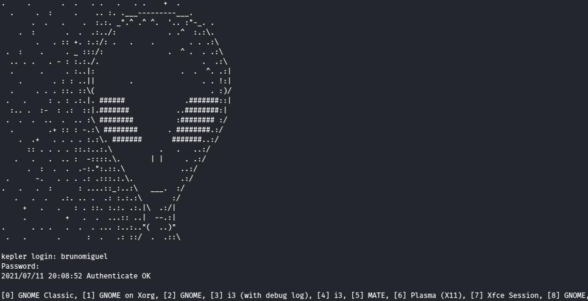

Featured package: emptty-git
Hello, reader. Welcome to the first blog post featuring a package available for installation at the repository.
As stated in the previous post, I will occasionally highlight a package I feel it brings value to the users. My first choice is emptty-git, a really fast and simple Display Manager that runs on a TTY.
Description
This CLI Display Manager is blazing fast and offers a few configuration options. One of these options and my personal favorite is setting the MOTD, like the one you can see in the next section.
You can also choose the TTY where it will run, set auto login, create custom sessions just for emptty and a couple for customization options you can check over at Github.
Screenshot

How to install
sudo pacman -Syu emptty-git